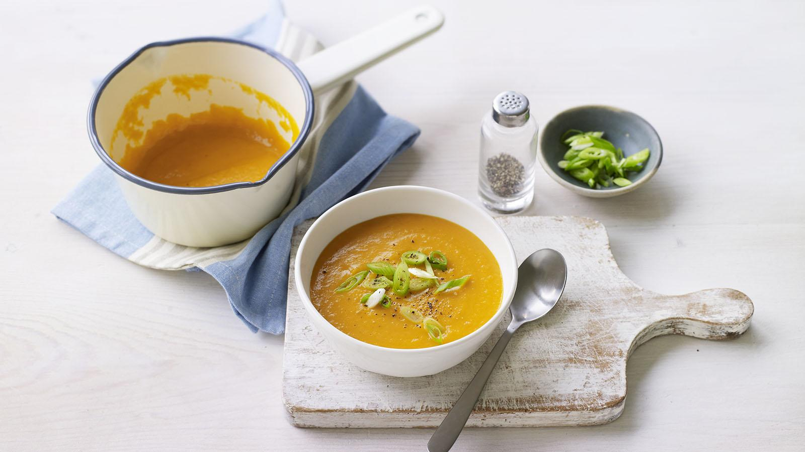

Carrot and Ginger Soup

Quick, easy and mouthwateringly good. This carrot and ginger soup is perfect for chilly afternoons. Why not make a few more portions and keep in the freezer for emergencies?
Each serving provides 160 kcal, 2g protein, 23g carbohydrate (of which 19g sugars), 4.5g fat (of which 1g saturates), 10g fibre and 0.9g salt.
Ingredients
- 1 tsp rapeseed oil
- 1 small onion (75g/2½oz peeled weight), finely chopped
- 1 garlic clove, finely chopped
- 20g/¾oz fresh root ginger, peeled and finely chopped
- 200g/7oz carrots, roughly chopped
- 300ml/10fl oz vegetable stock
- freshly ground black pepper
- 1 spring onion, finely chopped, to serve
Method
- Heat the oil in small saucepan over a medium heat. Add the onion and cook for 2-3 minutes. Add the garlic, ginger and carrots and cook for 5 minutes, stirring occasionally.
- Add the stock and season with pepper to taste. Bring to the boil, then reduce the heat, cover and simmer for 20 minutes, or until the carrots are soft.
- Pour the soup into a food processor and blend until smooth. Return to the pan and reheat gently.
- To serve, pour the soup into a warm serving bowl and garnish with the spring onions.
Recipe credit: Fiona Hunter, BBC Good Food
Return to Soups Page